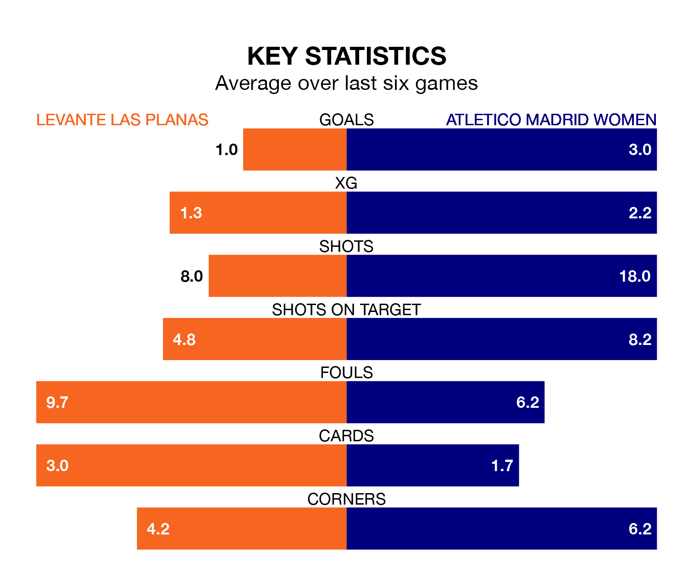

Atletico Madrid Women are strong favourites to take all three points despite Levante Las Planas's home advantage in Saturday lunchtime's match at Camp Municipal Les Planes.
*Betting Company* are offering odds of 1.28 on Atletico Madrid sealing the win, with the visitors sitting fifth in Primera Division Women table.
Levante Las Planas, who are 10th in the league and 13 points behind Atletico Madrid, are priced at 5.89 to win. A draw is set at 4.17.
Levante Las Planas are in terrible form in Primera Division Women, with no wins and a draw from their last six games.
With five wins and a draw over that period, Atletico Madrid's form is much better – they have taken 16 points from 18, compared to the home team's one.
In Sheila Guijarro Gómez, the visitors have the league's most on-form striker so far this season. She has notched 11 goals in 13 appearances.
Her goal rate of one every 99 minutes is slightly quicker than that of Anissa Lahmari, Levante Las Planas's top scorer with a goal every 108 minutes, and a total of four goals in 12 games.
With 30 goals in 13 games so far this season, Atletico Madrid are scoring more than average in the league with 2.3 goals per game. And they are conceding fewer than average, letting in nine goals at a rate of 0.7 per game.
Levante Las Planas, meanwhile, are below average scorers, with 1.3 goals per game, compared to a league average of 1.6. They have conceded 2.0 goals per game.
Over the last two years, Levante Las Planas and Atletico Madrid have played each other twice. They won one each.
Their last meeting was on May 6, when Levante Las Planas won 1-0 away.
Levante Las Planas's last match was on January 20, a 2-0 loss against Real Sociedad Women.
Atletico Madrid beat Valencia Women 6-1 last time out, on January 7, with Guijarro Gómez (four), Eva Maria Navarro and Gabriela Antonia García Segura on the scoresheet.
Updated: 09:07 (UTC), 24/01/24